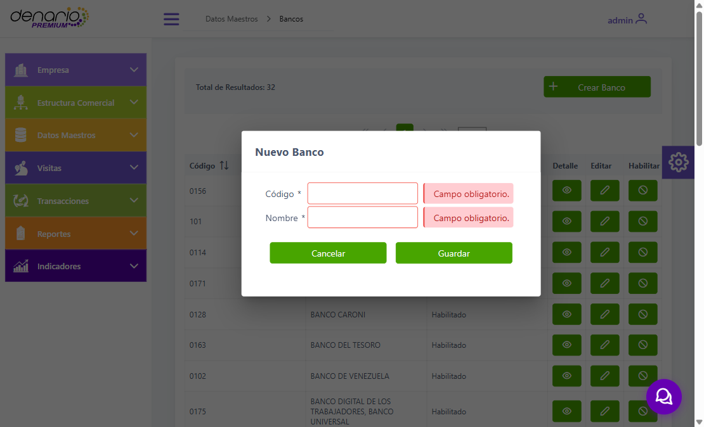
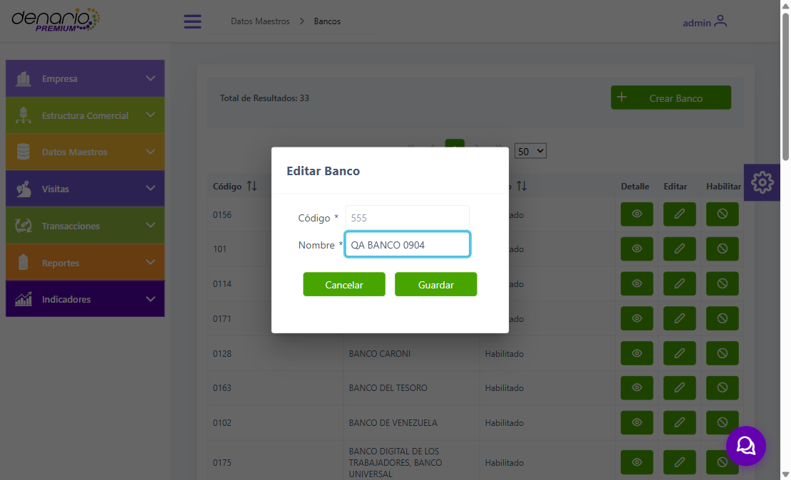
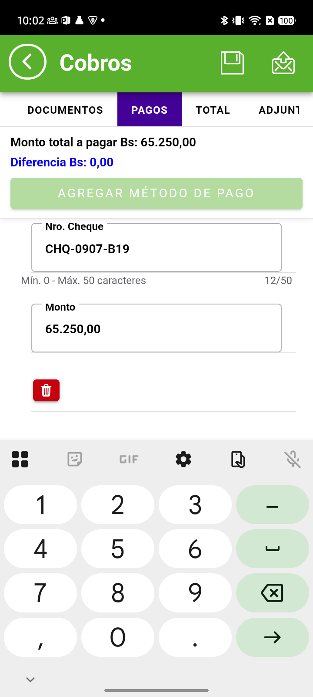
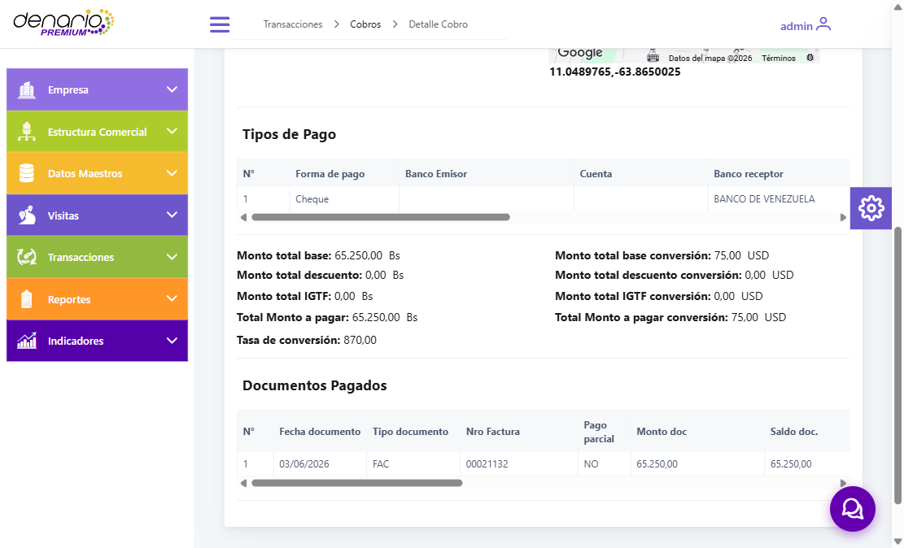

CONTROL DE CALIDADInforme de pruebas
07/09/2026
07/09/2026
REQ «Módulo Web (CRUD) para Gestión del Catálogo de Bancos» · IMPORTADORA 4K · Caribe
| Alcance | El CRUD en la web, la siembra automática del catálogo, y el uso del banco en cobros reales enviados, verificados en las 3 capas |
| Cobros enviados | 6 — Pago Móvil ×2 · Cheque · Transferencia ×2 · Anticipo |
| Versión | APK 6.6.21.3 (main) · servidor Caribe · vendedor V.0002 |
| Resultado | CRUD certificado · 6/6 cobros PASS · 1 defecto abierto · 2 observaciones |
| Ref | Tipo | Método | Elegido en el móvil | Nube | Web | |
|---|---|---|---|---|---|---|
| 2616 | Cobro | Pago Móvil | QA BANCO 0904 EDITADO | nu_collection_payment = QA BANCO 0904 EDITADO |
Banco Emisor correcto | PASS |
| 2617 | Cobro | Pago Móvil | BANCO MERCANTIL | nu_collection_payment = BANCO MERCANTIL |
Banco Emisor correcto | PASS |
| 2618 | Cobro | Cheque | BANCO DE VENEZUELA | na_bank = BANCO DE VENEZUELA · emisor vacío |
Banco Emisor vacío; el banco sale bajo «Banco receptor» | DEFECTO |
| 2619 | Cobro | Transferencia | Cuenta PROVINCIAL · 0108…6677 |
cuenta guardada correctamente | Cuenta y banco correctos | PASS |
| 2620 | Cobro | Transferencia Nueva Cuenta |
Cuenta escrita a mano · 0175…4433 |
se guarda igual que una cuenta registrada | Cuenta y banco correctos | PASS |
| 2621 | Anticipo | Transferencia | Cuenta BANESCO PANAMA · 0102…0910 |
co_type = 1 · cuenta correcta |
Correcto; sin «Documentos Pagados», como corresponde a un anticipo | PASS |
| Operación | Comportamiento verificado | |
|---|---|---|
| Listar | Código, nombre y estado, con buscador y paginación | PASS |
| Validación de campos | Con el formulario vacío responde «Campo obligatorio.» y no guarda | PASS |
| Crear | Queda registrado y amarrado a la empresa del usuario | PASS |
| Editar | Cambia el nombre sin duplicar; el código queda bloqueado | PASS |
| Desactivar | Pide confirmación · borrado lógico: el registro se conserva | PASS |
| Reactivar | Vuelve a quedar disponible (no pide confirmación, a diferencia de desactivar) | PASS |


Al crear un banco se dispara la carga automática de los bancos venezolanos que falten. Se verificó en vivo: la base pasó de 10 a 33 bancos con un solo registro creado.
| Regla | |
|---|---|
| No genera duplicados, ni por código ni por nombre | ✅ |
| No pisa los bancos ya existentes — conservan su información original | ✅ |
| Una segunda creación no vuelve a sembrar | ✅ |
| Los bancos sembrados llegan al equipo del vendedor | ✅ |
| Las 3 filas del catálogo que no entraron se explican por las reglas de precedencia | ✅ |
Al registrar un cobro con Cheque, el banco que el vendedor selecciona como Banco Emisor termina guardado en el campo del Banco Receptor, y el campo del emisor queda vacío.


Reproduce de forma consistente: se observó en tres cobros distintos (2612, 2614 y 2618), el último enviado con la versión actual. Solo afecta a Cheque: en Transferencia se comprobó con dos cobros donde el emisor y el receptor eran bancos distintos, y ahí cada uno queda en su campo.
| Caso | Estado |
|---|---|
| CRUD completo en la web | ✅ certificado |
| Siembra automática del catálogo | ✅ certificada |
| Los 3 métodos de pago con banco | ✅ cubiertos |
| Transferencia con cuenta registrada y con cuenta nueva | ✅ ambos |
| Anticipo | ✅ cubierto |
| Caso multi-empresa | no evaluable — el cliente de prueba tiene una sola empresa |
Queda un defecto por corregir en el método Cheque, donde el banco emisor se registra en el campo del receptor. No impide operar, pero afecta la trazabilidad del cobro y se recomienda resolverlo en una próxima entrega. Las dos observaciones son de menor severidad.

envios-b20-b22.md · req-crud-bancos-ciclo.md